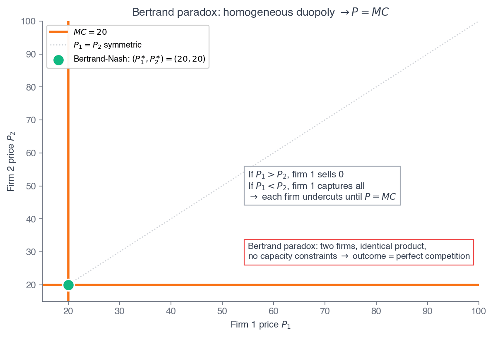

ECON 2316 • Microeconomic Theory • Chapter 13 • Part 2
Oligopoly
Part 1 found the long-run tangency when many firms ignore each other. Now drop that assumption: a few firms whose payoffs are linked. Spotify, Apple, Amazon, and YouTube Music all sit within a dollar of each other — not at the competitive floor, not the monopoly ceiling, but the third place where your best move depends on theirs.
Dr. Richeng Piao
Department of Economics
Northeastern University — 100 min

Learning Objectives
By the end of class today, you will be able to…
1
Define oligopoly, set the cartel upper bound, and explain why collusion breaks down. (Bloom L2)
2
Solve the Cournot model: best responses, the symmetric \(N\)-firm equilibrium, and the limit as \(N \to \infty\). (Bloom L4 — central result)
3
Derive the Bertrand paradox and explain the three assumptions it needs to hold. (Bloom L3)
4
Recover finite markups via differentiated-product Bertrand and calibrate to the streaming cluster. (Bloom L4)
5
Solve Stackelberg by backward induction and rank all five regimes on welfare. (Bloom L5)
From Many Prices to Many Firms
Chs 11–12 — one firm
- A single firm makes every decision internally
- One price (Ch 11) or a price portfolio (Ch 12)
- Markup pinned by own elasticity: \(L = -1/\varepsilon_D\)
- No rival to react to
Ch 13 — a few firms
- Each firm's profit depends on what rivals do
- Four models: Cournot, Bertrand, diff. Bertrand, Stackelberg
- Each predicts a different \(P\), \(Q\), profit, welfare
- The new ingredient is strategic interaction
One assumption relaxes. Chapters 11–12 let one firm monopolize. Now let a few firms compete — and each firm's optimum depends on a conjecture about the others. The market structures between perfect competition and pure monopoly are exactly the interesting cases: real markets — airlines, streaming, oil, pharma — almost never sit at either textbook extreme.
Three Oligopolies, One Question
Oil. OPEC+ — a handful of national producers plus a US-shale fringe. When Saudi cuts output, rivals respond; in April 2026 eight members began unwinding a 1.65 mb/d cut. A first-mover commitment game (§13.6).
Pharma. Wegovy vs Zepbound — two firms at \$1,349 and \$1,086/mo holding four-figure markups because the drugs differ, not because they collude (§13.5).
Streaming. Four paid platforms cluster within a dollar. Perfect competition would drive price to the \$8.40 royalty cost; monopoly would push to \$11.99 at \(L = 0.30\). They do neither.
\$11.99
Spotify (290M subs)
\$10.99
Apple Music
\$11.99
Amazon (\$10.99 Prime)
\$10.99
YouTube Music (Q4 2025)
All three are oligopolies — a handful of firms whose pricing turns on what rivals do. Oil previews sequential moves (Stackelberg, §13.6); the GLP-1 duopoly previews differentiated price competition (§13.5); streaming is the running anchor. None sits at the competitive floor or the monopoly ceiling — Part 2 is the toolkit for that “third place.”
Oligopoly: Your Best Move Depends on Theirs
An oligopoly is a market with a small number of firms whose payoffs depend on each other's choices. Each firm optimizes conditional on a conjecture about what rivals will do — and the three classic models differ only in what each firm holds fixed.
Cournot
Firms pick quantities simultaneously; each takes rivals' \(q\) as fixed. (§13.3)
Bertrand
Firms pick prices simultaneously; each takes rivals' \(P\) as fixed. (§13.4–13.5)
Stackelberg
One firm moves first and commits; the follower observes and responds. (§13.6)
Each conjecture yields a different equilibrium markup. Empirical IO matches each industry to the model that fits its strategic structure — quantity competition for capacity-constrained commodities, price competition for differentiated goods, sequential moves where one player can commit visibly first.
The Upper Bound: Why Don't They Just Collude?
If a few firms could perfectly coordinate, they would jointly play monopoly — pick total \(Q\) to maximize \(\pi^{M}\) and split it. With \(N\) identical firms, each makes \(q^{M}/N\) and earns \(\pi^{M}/N\). This cartel outcome is the highest profit any oligopoly can sustain. So why doesn't it always happen?
1. Antitrust. Sherman Act §1 forbids explicit price-fixing; executives face prison.
2. Coordination cost. With \(N \geq 3\), agreeing on each firm's quota takes repeated negotiation.
3. Cheating incentive. Even with an agreement, each firm gains by quietly undercutting — the deep one.
Recall from Principles — 1116 §13.4
A cartel is an agreement to coordinate output or price and split the profits. The 1116 treatment used OPEC and the prisoner's-dilemma payoff matrix: each member gains from the deal, but each also gains from cheating on it.
Ch 13 formalizes the cheating incentive as the Bertrand-undercutting logic (§13.4). Ch 14's repeated games decide whether cartels survive.
Reason 3 is the deep one: even with no antitrust exposure and zero coordination cost, each firm has a unilateral incentive to defect. For Ch 13 the cartel is an upper benchmark only — the ceiling every model below falls short of.
The Modern Variant: Algorithmic Pricing
The DOJ and seven state AGs sued RealPage (Aug 2024): its YieldStar software allegedly acted as a hub-and-spoke device, pooling non-public future-pricing data from competing landlords and recommending prices that softened competition — without explicit communication.
Nov 2025 proposed consent decree: stop training on non-public competitor data. Underlying class-action settlement \$141.8M (preliminarily approved Oct 2025).
Calvano, Calzolari, Denicolò & Pastorello (2020, AER): simulated Q-learning algorithms can independently learn supracompetitive collusive strategies — with punishment phases — and no communication at all.
Heads Up 13.1 — algorithmic pricing isn't automatically collusion
“The algorithm produced high prices” does not equal “the algorithm broke antitrust law.” Pricing software has a legitimate use: estimating your own demand.
The violation requires an agreement to share non-public information among competitors, or parallel conduct plus facts suggesting coordination. Watch the data flow, not the price level. §13.5 shows supracompetitive prices are fully consistent with non-collusive differentiated-Bertrand equilibrium.
Recap: Part 1 — Monopolistic Competition
Part 1 in one slide
Many differentiated firms, free entry, independent decisions. Differentiation gives each a downward-sloping perceived demand; the firm runs \(MR_i = MC\), so \(P > MC\).
Free entry then pulls each firm to the Chamberlin tangency: \(P = ATC\) (zero profit) on the falling branch of ATC — a persistent markup and excess capacity.
What changes in Part 2
Drop the “independent decisions” assumption. With only a few firms, each firm's profit depends on what rivals do — strategic interaction.
The cartel ceiling (\(L = 0.667\)) and the perfect-competition floor (\(L = 0\)) bracket every model below. Which point we land on depends on the conjecture: quantities, prices, or who moves first.
The plan. §13.3 Cournot → §13.4 Bertrand + the paradox → §13.5 differentiated Bertrand → §13.6 Stackelberg → §13.7 capacity and the welfare ranking across all five regimes.
§13.3
Cournot Competition
A few firms choose quantities simultaneously — each best-responding to the others
Cournot: Each Firm's MR at Its Share of the Market
The puzzle. Streaming firms face implied \(|\varepsilon^{M}| = 3.33\). Symmetric four-firm Cournot would predict \(L \approx 1/(4 \cdot 3.33) = 0.075\). The actual streaming Lerner is \(0.300\). What's wrong? — homogeneous Cournot is the wrong model for streaming. Hold that thought through §13.5.
Setup. \(N\) firms simultaneously choose \(q_i\); total \(Q = \sum q_i\); inverse demand \(P(Q)\). Firm \(i\) maximizes \(\pi_i = P(Q)q_i - C_i(q_i)\), taking rivals' outputs as fixed.
Differentiating (\(\partial Q/\partial q_i = 1\)):
\(\dfrac{\partial \pi_i}{\partial q_i} = P(Q) + q_i\,P'(Q) - C_i'(q_i) = 0\)
Rearranged: \(\underbrace{P(Q) + q_i P'(Q)}_{\text{firm } i\text{'s perceived } MR} = MC_i\). This is the Ch 11 monopolist's \(MR = MC\) — but applied at firm \(i\)'s share-weighted marginal revenue. A Cournot firm is a monopolist over its slice of the residual demand.
Calculus Corner 13.1 — Cournot Best Responses
Linear demand \(P = a - bQ\), constant \(MC_i = c\). The FOC \(a - b\big(\sum_j q_j\big) - bq_i = c\) gives firm \(i\)'s best response to rivals' total \(Q_{-i}\):
\(\mathrm{BR}_i(Q_{-i}) = \dfrac{a - c - b\,Q_{-i}}{2b}\)
Symmetric equilibrium (\(q_i = q^{\ast}\), \(Q_{-i} = (N-1)q^{\ast}\)):
\(q^{\ast} = \dfrac{a-c}{(N+1)b}, \quad P^{\ast} = \dfrac{a + Nc}{N+1}\)
SOC: \(2P' + q_i P'' < 0\); for linear demand \(= -2b < 0\) ✓. Firm output falls in \(N\), total output rises in \(N\), price falls in \(N\).

Best responses cross at the Cournot-Nash equilibrium — the fixed point where neither firm wants to deviate.
Toggle the Model: One Demand Curve, Five Equilibria
Demand \(P = 100 - Q\); \(MC = 20\). Every regime is a point on the demand curve: green = CS, blue = profit, red = DWL. Cournot \(N=1\) is the cartel; \(N\to\infty\) reaches Bertrand = PC. Stackelberg sits below Cournot duopoly on price.
Walkthrough 13.2 — Cournot Duopoly
Problem. Two firms, quantities. \(P = 100 - Q\), \(Q = q_1 + q_2\), each \(MC = 20\). Find the Cournot-Nash output, price, and per-firm profit.
Set up & solve
Firm 1's \(MR_1 = 100 - 2q_1 - q_2 = 20 \Rightarrow q_1 = 40 - q_2/2\) (best response).
Symmetric: \(q^{\ast} = 40 - q^{\ast}/2 \Rightarrow q^{\ast} = 80/3 \approx 26.67\).
\(Q = 160/3 \approx 53.33\), \(P = \$46.67\), \(\pi_i \approx \$711\), \(L = 0.571\).
Check — against the two benchmarks
Cartel: \(Q^M = 40\), \(P^M = \$60\), industry \(\pi^M = \$1{,}600\) (each firm \(\$800\)).
Bertrand (§13.4): \(P = MC = \$20\), \(\pi = 0\).
Cournot duopoly sits between — industry profit \(\$1{,}422\), closer to the cartel than to the floor.
Takeaway. Linear demand, constant MC: Cournot duopoly lands \((q^{\ast}, P^{\ast}) = \big(\tfrac{a-c}{3b}, \tfrac{a+2c}{3}\big)\) — exactly two-thirds of the way from cartel to PC on price. Each firm gets a third of cartel joint profit; the missing third is the cost of being unable to commit.
Walkthrough 13.3 — \(N\)-Firm Cournot and the PC Limit
Problem. \(N\) symmetric firms, \(P = 100 - Q\), \(MC = 20\). Solve for \(q^{\ast}, Q^{\ast}, P^{\ast}, L^{\ast}\) as functions of \(N\); verify the \(N \to \infty\) limit. Calibrate \(N = 4\) to the streaming constellation.
From CC 13.1: \(q^{\ast} = \dfrac{80}{N+1}\), \(P^{\ast} = \dfrac{100+20N}{N+1}\), \(L^{\ast} = \dfrac{4}{5+N}\).
| \(N\) | \(Q^{\ast}\) | \(P^{\ast}\) | \(\pi^{\ast}_i\) | \(L^{\ast}\) |
|---|---|---|---|---|
| 1 (mono) | 40 | \$60 | \$1,600 | 0.667 |
| 2 | 53.3 | \$46.67 | \$711 | 0.571 |
| 4 (streaming) | 64 | \$36 | \$256 | 0.444 |
| \(\infty\) | 80 | \$20 | \$0 | 0 |
Cournot-to-PC convergence. As \(N \to \infty\): each firm's share \(\to 0\), total \(Q \to 80 = Q^{PC}\), \(P \to MC\), \(L \to 0\). Monotonic.
The streaming wedge. Linear-demand \(N=4\) gives \(L = 0.444\); constant-elasticity \(N=4\) gives \(L = 1/(4 \cdot 3.33) = 0.075\). The actual streaming \(L = 0.300\) sits between — neither homogeneous model fits. §13.5 differentiation will.
Cournot ≠ Cartel — and How IO Measures Real Markups
Heads Up 13.2 — symmetric Cournot is not an even-split cartel
At \(N = 2\): the cartel makes total \(Q = 40\) at \(P = \$60\), each firm earning \(\$800\). Cournot makes \(Q = 53.33\) at \(P = \$46.67\), each earning \(\$711\).
Each cartel member individually gains by producing above quota at the cartel price. The Cournot-Nash is the fixed point where no firm wants to deviate. The wedge is the cost of being unable to commit — Ch 14 shows when future-punishment threats close it.
Theory and Data 13.2 — the BLP workhorse
Berry-Levinsohn-Pakes (1995, Econometrica) is the standard method: random-coefficients logit demand, prices instrumented by rival characteristics, cross-price elasticities recovered by contraction mapping. Apply the Bertrand FOC firm-by-firm and out come markups, marginal costs, and merger counterfactuals.
Miller-Sheu-Weinberg 2021 (US beer); Backus-Conlon-Sinkinson 2021 (cereal). Implied Lerner indices cluster 0.2–0.5 across consumer goods — well above homogeneous-Cournot at the same concentration. Differentiation, not concentration, is the dominant source of market power.
§13.4
Bertrand Competition & the Paradox
If firms set prices instead of quantities, how few firms does it take to reach \(P = MC\)?
Poll #1 — Predict the Price
Two firms sell identical bottled water. Both have \(MC = \$20\). They set prices simultaneously, capacity is unlimited, and it's a one-shot game. Demand \(P = 100 - Q\). What is the equilibrium price?
45 sec to vote
Answer: A — two firms reach \(P = MC = \$20\)
At any \(P > MC\), each firm's best response is to undercut by a penny and grab the whole market. The only price at which no one wants to undercut is \(P = MC\).
Trap C: Cournot (quantities) and Bertrand (prices) give different answers on the same demand. Same two firms, same costs — switch the strategic variable from \(q\) to \(P\) and the markup goes from \(0.571\) to \(0\). The strategic variable is not a modeling detail.
The Bertrand Paradox: Two Firms, Competitive Outcome
Setup. Two firms, homogeneous product, constant \(MC\), simultaneous prices \(P_i\). Demand goes to the lower-price firm; ties split. Unlimited capacity, one shot.
Equilibrium: \(P_1 = P_2 = MC\), each earning zero. For any \(P_2 > MC\), firm 1 best-responds with \(P_2 - \epsilon\) and captures everything. That undercutting logic only stops at \(MC\).
The same demand that gives \(L = 0.667\) as a monopoly and \(L = 0.444\) as Cournot-\(N{=}4\) gives \(L = 0\) as a Bertrand duopoly. Two firms reach the competitive limit — no need for infinitely many.

Undercutting collapses any candidate price above \(MC\) to the competitive floor.
Walkthrough 13.4 — Bertrand by Elimination
Problem. Two firms, identical bottled water, \(MC = 20\). \(P = 100 - Q\). Simultaneous prices; lower price takes the market (ties split). Find the Bertrand-Nash equilibrium.
Eliminate the candidates
(i) \(P_1 > P_2 > MC\): firm 1 sells nothing; deviating to \(P_2 - \epsilon\) earns positive profit. ✗
(ii) \(P_1 = P_2 > MC\): each gets half; deviating to \(P - \epsilon\) captures the whole market. ✗
(iii) \(P_1 = P_2 = MC\): raise → rival takes all (still zero); lower → loss. No profitable deviation. ✓
Solve & check
\((P_1^{\ast}, P_2^{\ast}) = (\$20, \$20)\). \(Q = 80\), split \(q_i = 40\), \(\pi_i = 0\), \(L = 0\).
This is the perfect-competition outcome: \(TS = \$3{,}200\), \(DWL = 0\), both firms at zero economic profit — reached with just two firms.
Takeaway. A powerful counterexample to “few firms = high markups.” Three assumptions — homogeneous products, unlimited capacity, one shot — force \(P = MC\) even with two firms. Real duopolies escape because at least one assumption fails.
Heads Up 13.3 — The Paradox Needs All Three Assumptions
The empirical fact that few-firm markets show large markups doesn't refute Bertrand — it refutes its three assumptions in pure form. Each fails somewhere:
Homogeneous products? — Spotify, Apple, Amazon, YouTube Music aren't perfect substitutes (algorithms, exclusives, bundles, integrations). Finite substitutability \(\gamma\) gives \(P > MC\). → §13.5
Unlimited capacity? — When capacity binds, undercutting stops paying: the rival's capacity caps your residual demand (Kreps-Scheinkman 1983). The two-stage game gives the Cournot outcome. → §13.7
One shot? — In an infinitely repeated game with a patient enough discount factor, grim-trigger strategies sustain \(P > MC\) (Friedman 1971; Stigler 1964). → Ch 14
The Bertrand paradox is best read as a diagnostic: it tells you which feature of a real market generates its markup. Each of the next three units relaxes exactly one assumption and recovers a finite markup.
§13.5
Differentiated-Product Bertrand
Relax “homogeneous” — and the four-firm streaming cluster falls right out
Calculus Corner 13.3 — Differentiated-Bertrand FOC
Linear differentiated demand: \(Q_i = \alpha - \beta P_i + \gamma P_j\), with \(0 \leq \gamma < \beta\). The cross-price coefficient \(\gamma\) is the substitutability dial.
Firm \(i\) maximizes \(\pi_i = (P_i - c)(\alpha - \beta P_i + \gamma P_j)\). FOC:
\(\alpha - \beta P_i + \gamma P_j - \beta(P_i - c) = 0\)
Best response \(P_i = (\alpha + \beta c + \gamma P_j)/(2\beta)\). Set \(P_i = P_j = P^{\ast}\):
\(P^{\ast} = \dfrac{\alpha + \beta c}{2\beta - \gamma}\)
\(\gamma \to \beta\) (near-perfect substitutes): \(P^{\ast} \to c\), the Bertrand floor. \(\gamma \to 0\) (independent): \(P^{\ast} \to (\alpha+\beta c)/2\beta\), each firm's monopoly price.

Prices are strategic complements — best responses slope up, equilibrium above \(MC\).
Walkthrough 13.5 — Spotify vs Apple Music Calibration
Problem. Match the symmetric differentiated-Bertrand model to Q4 2025 streaming data: \(P = \$11.99\), \(MC = \$8.40\), firm-level \(|\varepsilon| = 3.33\). Take \(\beta = 1\). Find \((\alpha, \gamma)\) and verify.
Solve
Pick \(\gamma = 0.4\) (moderate substitutability). From \(P^{\ast} = (\alpha + \beta c)/(2\beta - \gamma) = 11.99\):
\(\alpha = 11.99(1.6) - 8.40 = 10.784\).
Per-firm output \(Q_i = 10.784 - (1 - 0.4)(11.99) = 3.590\).
Verify \((\alpha,\beta,\gamma) = (10.784, 1, 0.4)\)
\(P^{\ast} = 19.184/1.6 = \$11.99\) ✓ · \(\varepsilon_{ii} = -11.99/3.590 = -3.34 \approx -3.33\) ✓
\(\varepsilon_{ij} = +1.336\) (substitutes) · \(L = (11.99 - 8.40)/11.99 = 0.300\) ✓
Same \(\gamma\) at \(\gamma \to 1\): equilibrium collapses to \(P = MC = \$8.40\), \(L = 0\).
Takeaway. Two differentiated firms deliver the same \(L = 0.300\) as the Ch 11 monopoly — because differentiation gives each a residual demand almost as steep as the monopolist's. The entire \(0.300\)-vs-\(0\) gap is the differentiation effect. The streaming cluster is consistent with strong differentiation (small \(\gamma/\beta\)).
Wegovy vs Zepbound — Differentiation Lets Two Firms Hold Markups
\$1,349
Wegovy / mo (semaglutide; CV indication)
\$1,086
Zepbound / mo (tirzepatide; superior weight loss)
Real clinical differentiation sustains markups in a duopoly that would otherwise face Bertrand undercutting. Manufacturer-direct programs (Wegovy \$199–349 NovoCare; Zepbound \$299–449 Lilly Direct) act as third-degree PD. April 2026: Novo announced a \$675 Wegovy list cut effective Jan 2027 under Zepbound pressure. Q1 2026 spread: \$263.
Heads Up 13.4 — the model explains the cluster, not its symmetric prices
Symmetric diff-Bertrand does not predict every firm charges the same price. It predicts all firms price above MC by an amount set by differentiation.
Asymmetric costs or demand give asymmetric prices. The April 2026 streaming spread (Apple \$10.99 to Spotify \$12.99) is consistent with asymmetric \(MC\). The cluster width is the prediction; the (lack of) symmetry reflects firm-specific costs.
Theory and Data 13.1 — The Cluster Widens, Jan–Apr 2026
Through Q4 2025 the four firms clustered within \$1.00: Spotify \$11.99, Apple \$10.99, Amazon \$11.99 (\$10.99 Prime), YouTube \$10.99. Three moves widened it:
Spotify, Jan 15 2026: Individual \$11.99 → \$12.99.
Amazon, Mar 2026: standalone holds \$11.99 (Prime \$10.99).
YouTube Music, Apr 10 2026: \$10.99 → \$11.99 (combined Premium \$13.99 → \$15.99).
\$1.00
Q4 2025 spread
\$2.00
post-Apr 2026 spread (Apple \$10.99 ↔ Spotify \$12.99)
Differentiated Bertrand supports spreads of any size up to the monopoly bound, set by \(\gamma\). The widening is consistent either with rising differentiation (falling \(\gamma\)) or with Spotify's \(MC\) rising faster than rivals' — Q4 2026 data will separate the two.
§13.6
Stackelberg Leader–Follower
Same payoffs as Cournot — only the timing changes. One firm commits first.
Calculus Corner 13.2 — Stackelberg Backward Induction
Leader commits \(q_1\); follower observes and picks \(q_2\). Same \(P = a - bQ\), \(MC = c\). Solve backward.
Step 1 — follower (same as Cournot BR): \(q_2(q_1) = (a - c - bq_1)/(2b)\).
Step 2 — leader substitutes the reaction function: \(\pi_1(q_1) = \big(\tfrac{a-c}{2} - \tfrac{bq_1}{2}\big) q_1\). FOC \(\Rightarrow\)
\(q_1^{\ast} = \dfrac{a-c}{2b}, \quad q_2^{\ast} = \dfrac{a-c}{4b}, \quad \pi_1^{\ast} = 2\,\pi_2^{\ast}\)
Total \(Q^{S} = \tfrac{3(a-c)}{4b} > Q^{C}\), so \(P^{S} < P^{C}\). The leader's commitment makes the follower scale back — the first-mover advantage.

Leader rides the follower's reaction curve to its highest iso-profit contour.
Walkthrough 13.6 — Stackelberg with Saudi as Leader
Problem. \(P = 100 - Q\), \(MC = 20\) (crude oil). Saudi Aramco commits \(q_1\) first; US shale (one follower) observes and chooses \(q_2\). Solve and compare to Cournot.
Solve
Follower's reaction: \(q_2 = 40 - q_1/2\).
Leader: \(\pi_1 = (40 - q_1/2)q_1\); FOC \(40 - q_1 = 0 \Rightarrow q_1^{\ast} = 40\).
\(q_2^{\ast} = 20\), \(Q^{S} = 60\), \(P^{S} = \$40\), \(\pi_1 = \$800\), \(\pi_2 = \$400\), \(L^{S} = 0.500\).
Check vs Cournot duopoly
Cournot: \(Q^{C} = 53.33\), \(P^{C} = \$46.67\), each \(\pi = \$711\), \(L^{C} = 0.571\).
Stackelberg: more output (60 > 53.33), lower price (\$40 < \$46.67), lower Lerner.
Leader earns more (\$800 > \$711); follower earns less (\$400 < \$711). Industry profit \$1,200 < \$1,422.
Takeaway. First-mover advantage pays if the leader can credibly commit before the follower moves. Total Stackelberg output exceeds Cournot, so consumers do better — but the leader extracts surplus from the follower. Aramco's publicly-announced, monitored production cuts function as exactly such commitments.
Application: OPEC+ April 2026 — Saudi as Leader, US Shale as Fringe
9.0
Saudi mb/d (early 2025, EIA)
13.6
US mb/d 2025 (fringe price-taker)
On April 5, 2026, eight core OPEC+ nations agreed to begin unwinding their 1.65 mb/d voluntary cut, starting May 2026 with a 206 kb/d step (Saudi and Russia each +62 kb/d).
When Saudi-led cuts contract supply, prices rise, US shale rigs activate, and US output scales to partly offset. Saudi knows ex ante its cuts will be partially absorbed — that is the leader anticipating the follower.
OPEC+ is empirically more Stackelberg-with-fringe than pure Cournot, because cartel members publicly commit to quotas before observing the fringe response. The leader–follower asymmetry matches the first-mover-advantage prediction.
§13.7
Capacity & the Welfare Ranking
The Kreps-Scheinkman bridge — then line up all five regimes on one ruler
Walkthrough 13.7 — Capacity-Then-Price Replicates Cournot
Problem. Two-stage game on \(P = 100 - Q\), \(MC = 20\). Stage 1: choose capacity \(K_i\). Stage 2: set price \(P_i\) with \(q_i \leq K_i\). Find the subgame-perfect equilibrium.
Stage 2: with capacities \((K_1, K_2)\), price clears at \(P = 100 - (K_1 + K_2)\); each firm sells its capacity.
Stage 1: firm 1 maximizes \(\pi_1 = (80 - K_1 - K_2)K_1\); FOC \(K_1 = 40 - K_2/2\) — exactly the Cournot best response.
Symmetric: \(K^{\ast} = 80/3 \approx 26.67\), \(P^{\ast} = 140/3 \approx \$46.67\), \(\pi_i \approx \$711\) — the Cournot duopoly outcome, not Bertrand.

Finite capacity caps the undercutting punishment — price competition becomes quantity competition.
Poll #2 — Who Gives Consumers the Lower Price?
Same demand \(P = 100 - Q\), same \(MC = \$20\), same two firms. In one market they play Cournot (simultaneous quantities); in another, Stackelberg (one commits first). Which market gives consumers the lower price?
45 sec to vote
Answer: B — Stackelberg, \(\$40 < \$46.67\)
The leader commits to a large output (\(q_1 = 40\)); the follower retreats (\(q_2 = 20\)). Total \(Q = 60 > 53.33\), so \(P\) falls to \(\$40\).
Trap A: “simultaneous = more competitive” is wrong here. The first-mover advantage is an output-expansion commitment — great for the leader and for consumers, bad for the follower (\(\$400 < \$711\)). Sequential timing lowers price and raises consumer surplus.
Walkthrough 13.8 — Welfare Across Five Regimes
All on the locked calibration \(P = 100 - Q\), \(MC = \$20\), \(TS^{PC} = \$3{,}200\). The chapter's payoff table.
| Regime | \(Q^{\ast}\) | \(P^{\ast}\) | Industry \(\pi\) | \(CS\) | \(TS\) | \(DWL\) | \(L\) |
|---|---|---|---|---|---|---|---|
| (a) Cartel / monopoly | 40 | \$60 | \$1,600 | \$800 | \$2,400 | \$800 | 0.667 |
| (b) Cournot duopoly | 53.3 | \$46.67 | \$1,422 | \$1,422 | \$2,844 | \$356 | 0.571 |
| (c) Stackelberg | 60 | \$40 | \$1,200 | \$1,800 | \$3,000 | \$200 | 0.500 |
| (d) Diff. Bertrand (stylized) | ~70 | ~\$30 | ~\$700 | ~\$2,450 | ~\$3,150 | ~\$50 | ~0.333 |
| (e) Bertrand homog. = PC | 80 | \$20 | \$0 | \$3,200 | \$3,200 | \$0 | 0 |
Both rankings are monotonic. Welfare: \(TS^{PC} > TS^{Bdiff} > TS^{S} > TS^{C} > TS^{M}\). Lerner: \(0 < L^{Bdiff} < L^{S} < L^{C} < L^{M}\). Moving from PC toward monopoly raises Lerner and lowers welfare in lockstep. Note \(L^{S} < L^{C}\) — Stackelberg's output expansion beats Cournot for consumers.
The Market-Structure Spectrum, End to End

One picture for the whole chapter: every model is a point between the perfect-competition floor (\(L = 0\), max welfare) and the cartel ceiling (\(L = 0.667\), min welfare). Which point a real market lands on is selected by its strategic structure — quantities vs prices, simultaneous vs sequential, homogeneous vs differentiated.
Measuring Concentration: The HHI — and Its Limits
The Herfindahl-Hirschman Index sums squared market shares: \(\text{HHI} = \sum_i s_i^2\) (shares in %, range 0–10,000). \(N\) equal firms give \(\text{HHI} = 10{,}000/N\); a monopoly is \(10{,}000\).
It's the antitrust agencies' first-pass screen for merger review — higher HHI flags more concentration.
But concentration is not conduct. §13.5 showed two differentiated firms can hold \(L = 0.300\) while five homogeneous Cournot firms hold less — and Bertrand reaches \(L = 0\) with just two. HHI is a proxy, not a verdict. The strategic structure (this chapter) is what actually sets the markup.

HHI across industries — a screening tool, not a measure of market power itself.
Chapter 13 — The Six Results
Chamberlin LR tangency (§13.2). Free entry of differentiated firms → perceived demand tangent to ATC: \(P > MC\) and excess capacity, together.
Cournot \(N\)-firm (§13.3). \(q^{\ast} = \tfrac{a-c}{(N+1)b}\), \(P^{\ast} = \tfrac{a+Nc}{N+1}\), \(L^{\ast} = \tfrac{4}{5+N}\); \(L \to 0\) as \(N \to \infty\).
Bertrand paradox (§13.4). Homogeneous + unlimited capacity + one shot → \(P = MC\) with just two firms.
Differentiated Bertrand (§13.5). \(P^{\ast} = \tfrac{\alpha + \beta c}{2\beta - \gamma}\); finite markup for any \(\gamma < \beta\). Explains the streaming cluster.
Stackelberg (§13.6). Leader \(\tfrac{a-c}{2b}\), follower \(\tfrac{a-c}{4b}\); \(\pi_1 = 2\pi_2\). Output up, price down vs Cournot.
Kreps-Scheinkman (§13.7). Capacity-then-price replicates Cournot — the paradox is a teaching case; real capacity-bound markets play Cournot.
One spine. Welfare ranks \(TS^{PC} > TS^{Bdiff} > TS^{S} > TS^{C} > TS^{M}\); Lerner ranks the reverse. Every model is a point between the competitive floor and the cartel ceiling, selected by strategic structure.
Chapter 13 — complete
Questions?
Next: Chapter 14 — Game Theory. We made the conjectures informal this chapter; now we formalize them — with the four-firm streaming constellation as the repeated-game laboratory.